电子表面组装技术
（Surface Mount Technology, SMT)
新一代的电子装联技术，以采用贴装元器件进行表面贴装的技术和采用回流焊技术为特点
SMT技术包含的内容
- SMT工艺设计
- 电子设备与可靠性
- 元器件封装设计与制作
- 工艺辅料
- SMT管理
- SMT专用设备维护与保养
1.1 电子制造设备概述
1.1.1 电子制造技术
电子专业制造服务
(Electronic Contract Manufacturing Servers, EMS)
指为电子产品制造商提供制造、采购、部分设计及物流等一系列服务的生产厂家。
相对于传统的原始设备制造厂商(Original Equipment Manufacture, OEM)或原始设计制造商（Original Design Manufacturer， ODM）服务仅仅提供产品的设计与代工生产，EMS提供的是知识与管理的服务，如产品开发、产品生产、物料管理、后勤运输、甚至产品的维修服务。
国际知名的EMS厂商有 鸿海(Foxconn)、伟创力（Flextronics） 、纬创（Wistron）等。
只做代工（OEM）的有 深圳振华等。
1.1.2 电子产品制造设备构成
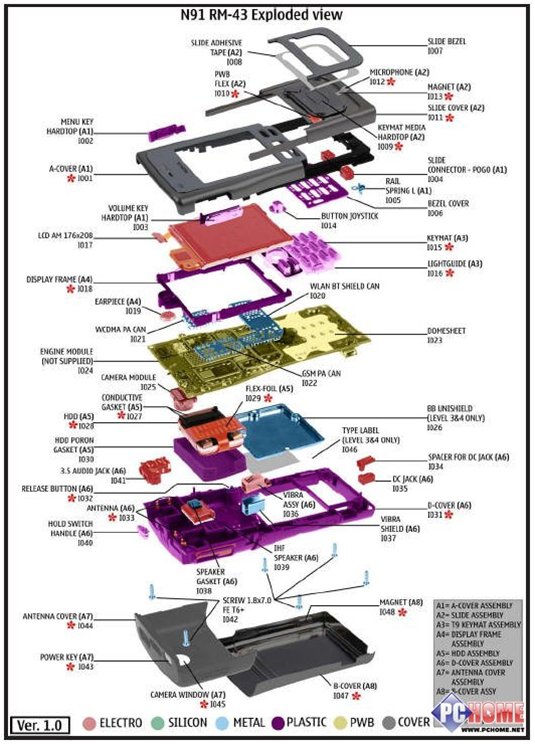任何一个电子设备都是由 控制电路（control circuit）、工作电路（working circuit）、输出电路（output circuit）、电源电路（power circuit）、 面板（panel）、机壳（shell）等部分组成
SMT生产设备
焊膏印刷机 solder printer
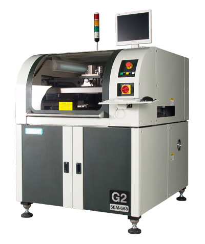 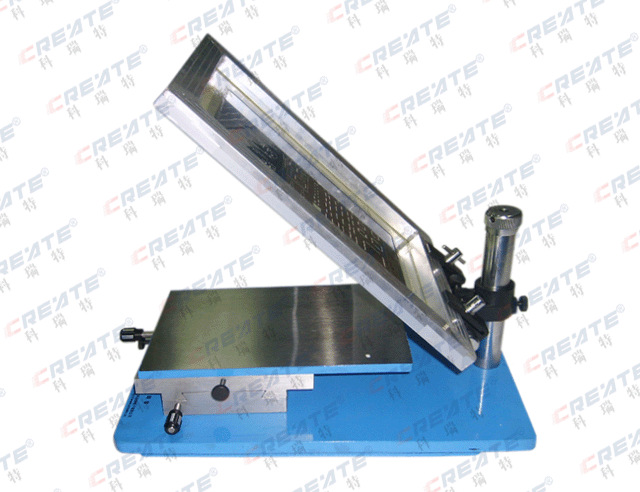SMT生产设备
贴片机 pick and place/mount machine
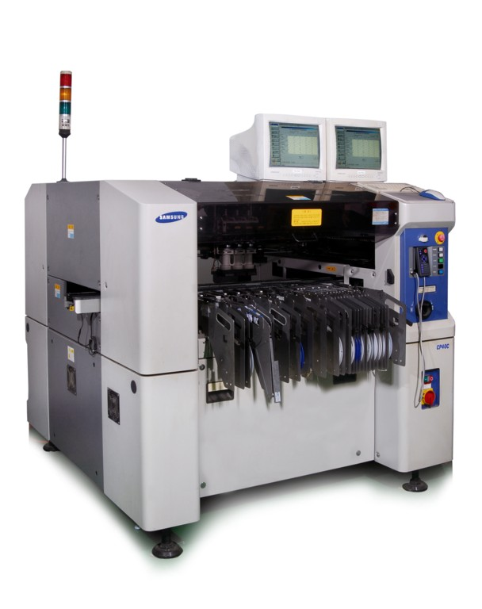 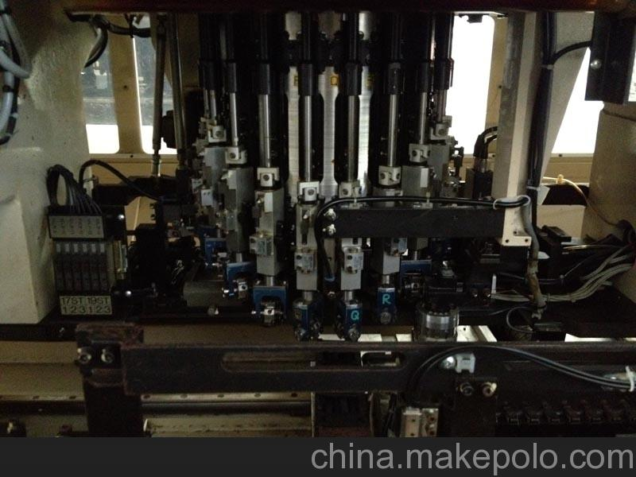 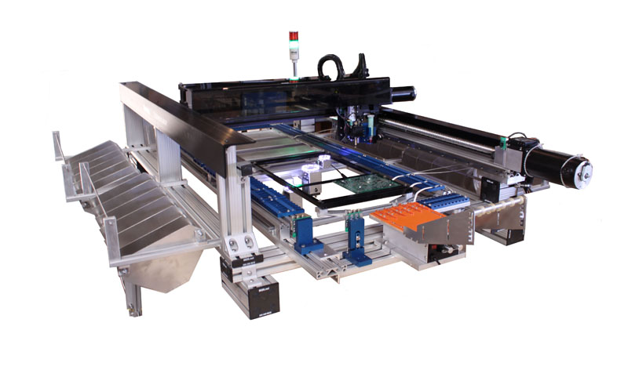SMT生产设备
回流焊机 reflow oven
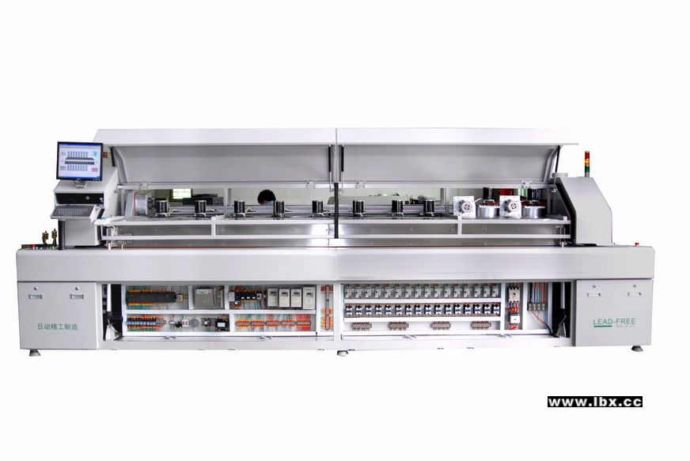SMT生产设备
波峰焊机 wave solder oven
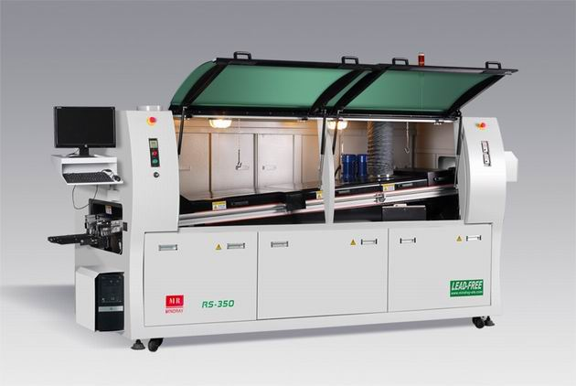SMT检测设备
- 在线测试仪ICT
- 光学检查仪AOI
- X射线检查仪X-ray tester
- 炉温曲线测试仪 The temperature profile test instrument
- 其他。。。
SMT维修设备
- BGA返修台
- 恒温烙铁
- 吸锡枪
- 其他
生产辅助设备
上板机、接驳台、下板机、超声波清洗机、锡膏搅拌机、胶水脱泡机、PCB制版机、漆包线剥线机、元件计数器、防静电设备等。。。
1.1.3 电子制造设备的工作环境
-
温度
印刷环境要求23℃±3℃，工厂温度设定为17℃~28℃ -
湿度
一般要求45%~70%RH，太低则容易产生静电，太高则容易吸潮 -
空气
保持空气清洁度在10万级（BGJ73-84），CO2在1000ppm10-6以下，CO在10ppm10-6以下，防止灰尘，减少含S、N、CO等有害气体
1.1.3 电子制造设备的工作环境
-
照明
理想照明度在800lx~1200lx。
-
排风
回流焊炉和波峰焊炉都需要排风，风量最小为15m3/min
-
电源
单相220VAC，三相380V，大功率设备要单独布线。
-
气源
压力为7kgf/cm2。
1.2 SMT生产线的组成与分类
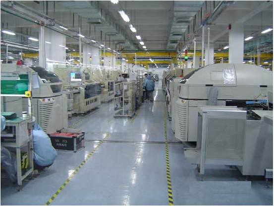
1.2.1 SMT大概流程配置线
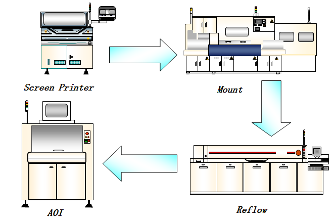
最简单的SMT生产线至少包括印刷机、贴片机和回流焊炉，一般还要加上检测设备。
SMT线体设备的布局

- 一般性布局：
[焊膏印刷机]-->[贴片机]-->[接驳台]-->[回流焊机]
- 完整性布局
[上板机]-->[焊膏印刷机]-->[AOI]-->[贴片机]-->[AOI]-->[接驳台]-->[回流焊炉]-->[AOI]-->[下板机]
为了提高速度，应该选用全自动的印刷机，并分别配置一台高速贴片机（射片机，chip shooter）和一台多功能贴片机（用于比较大和异性的元件）。
[焊膏印刷机]-->[贴片机]-->[接驳台]-->[回流焊机]
[上板机]-->[焊膏印刷机]-->[AOI]-->[贴片机]-->[AOI]-->[接驳台]-->[回流焊炉]-->[AOI]-->[下板机]
1.2.2 SMT生产线分类
单线
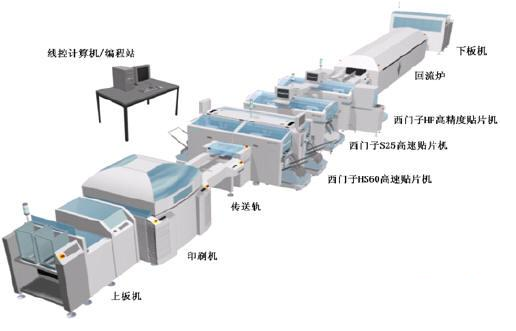
1.2.2 SMT生产线分类
双线
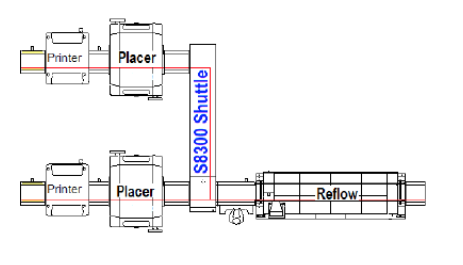
1.2.2 SMT生产线分类
集成组装系统
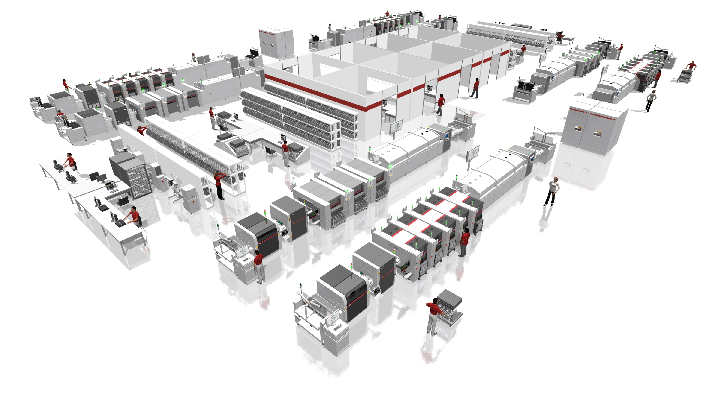
1.3 SMT生产线的设计
1.3.1 总体设计
- 元器件（components）和基板（substrate）的选择:插装元件多少、引脚间距等，建立元器件数据库和工艺要求
- 组装方式及工艺流程：
- 传统：采用插装技术
- I型：全表面组装技术
- II型：双面混合组装技术
- III型:单面混合组装技术
1.3.2 根据产量来确定生产线的自动程度
- 手动生产线
- 半自动: ＜3000片/h, 精度不定
- 低速线：＜8000片/h，精度 ＞±0.2mm，不建议采用
- 中速高精度线：＜20000片/h，精度 ＜±0.1mm，建议采用，柔性好
- 高速线：＞50000片/h，精度 ＞±0.2mm，适合于单一产品
1.3.3 SMT设备的选型
- 性能、功能及可靠性：重要程度：性能＞可靠性＞功能
- 可扩展性和灵活性
- 可操作性和可维护性
- 其他考虑：
- 验收：性能指标、标准样板、产品
- 技术队伍
1.3.4 电子制造工厂车间布局
- 熟悉车间现状：空间大小，地面，防静电，空调，湿度控制，抽风系统，电力，出入口（至少两个），消防，仓库，照明等
- 车间使用要求：快速定位，满足未来扩展，有序排列，划定区域等
- 布局要求：灭火器，料车，备料台，印刷工位，锡膏放置区，目捡和维修区，网板放置区，垃圾区，看板区，产品区，SMT备件区，温湿度测定区，办公区，防静电设施，
- 其他要求：仓管，气路，电路，抽风
1.3.5 提高生产线效率
- 减少停机时间（down time）：减少批量的准备，避免出现零件短缺，有计划进行定期的维护（运行120h-140h/周的设备必须每周维护）
- 减少瓶颈（bottle neck）：贴片机和ICT
1.4 电子制造设备的发展
电子制造设备的发展
- 贴装设备:高精度，高速度，多功能
- 印刷设备：高密度，多种方式的检测，高质量印刷
- 焊接设备:无铅化，倒装焊技术，导电胶胶接技术
- 检测设备：多种非光学检测设备的应用，检测与工艺分析结合
SMT线体的发展
- 绿色环保：无铅，其他
- 连线高效：
- 信息集成和柔性生产